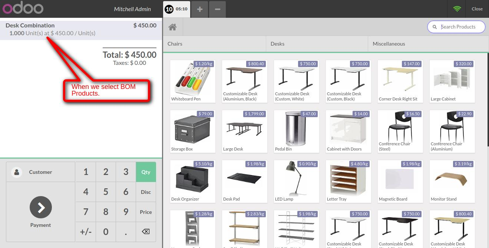
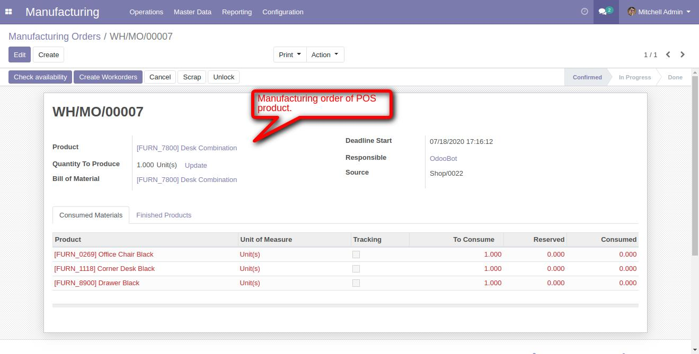

POS create Manufacturing Order
Allows to create manufacturing order when you select BOM product
Features
- Seller can easily create manufacturing order from point of sale.
1. Select BOM product in POS.

2. POS manufacturing order.

If You Need Any Help Please Contact
Email Id: erpmstra@gmail.com